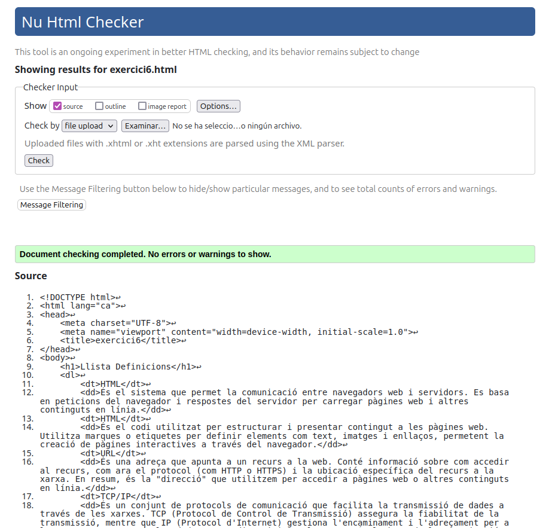

Llista Definicions
- HTML
- És el sistema que permet la comunicació entre navegadors web i servidors. Es basa en peticions del navegador i respostes del servidor per carregar pàgines web i altres continguts en línia.
- HTML
- És el codi utilitzat per estructurar i presentar contingut a les pàgines web. Utilitza marques o etiquetes per definir elements com text, imatges i enllaços, permetent la creació de pàgines interactives a través del navegador.
- URL
- És una adreça que apunta a un recurs a la web. Conté informació sobre com accedir al recurs, com ara el protocol (com HTTP o HTTPS) i la ubicació específica del recurs a la xarxa. En resum, és la "direcció" que utilitzem per accedir a pàgines web o altres continguts en línia.
- TCP/IP
- És un conjunt de protocols de comunicació que facilita la transmissió de dades a través de les xarxes. TCP (Protocol de Control de Transmissió) assegura la fiabilitat de la transmissió, mentre que IP (Protocol d'Internet) gestiona l'encaminament i l'adreçament per a la correcta entrega de les dades entre dispositius a la xarxa. És la base de la comunicació a Internet.
- Internet
- És una xarxa global d'ordinadors interconnectats que permeten la comunicació i el intercanvi d'informació a escala mundial.
- W3C
- És un consorci internacional que desenvolupa i estableix estàndards per a la web, assegurant la compatibilitat i interoperabilitat entre diferents plataformes. Se centra en la millora de la web mitjançant la definició de protocols i guies per al desenvolupament web.
- Mozilla Foundation
- És una organització sense ànim de lucre que impulsa el desenvolupament d'Internet oberta i accessible. És coneguda per crear el navegador web Firefox i promoure estàndards oberts, privadesa i una experiència en línia lliure i transparent.

Anar a índex